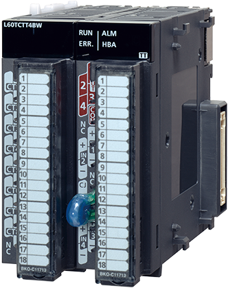
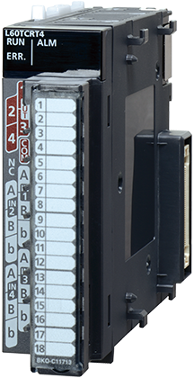
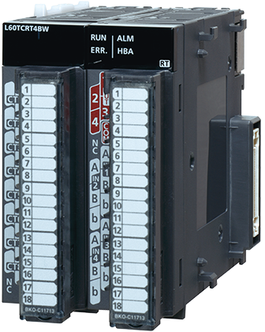

Controllers MELSEC-L Series
Product features -Analog/Temperature Control-


Multiple Input (Voltage/Current/Temperature) Module
Channel isolated multiple input
Channel isolated multiple input
Number of inputs: 4 channels
Input voltage: -10 to 10 V DC
Input current: 0 to 20 mA DC
Input micro voltage: -100 to 100 mV
Input thermocouple: K, J, T, E, N, R, S, B, U, L, PLⅡ, W5Re/W26Re
Input RTD: Pt1000, Pt100, JPt100, Pt50
Conversion speed: 50 ms/channel
Resolution
Voltage/Current/micro voltage: 1/20000
Thermocouple: B, R, S, N, PLⅡ, W5Re/W26Re: 0.3°C,
K, E, J, T, U, L: 0.1°C
RTD: Pt100, JPt100: 0.03°C/0.1°C, Pt1000, Pt50: 0.1°C
Analog Input Modules
Analog Input
Analog Input
Number of inputs: 4 channels
Input voltage: -10 to 10 V DC
Input current: 0 to 20 mA DC
Conversion speed: 20 µs/channel
Resolution: 1/20000
Number of inputs: 8 channels
Input voltage: -10 to 10 V DC
Conversion speed: 1 ms/channel
Resolution: 1/16000
Number of inputs: 8 channels
Input current: 0 to 20 mA DC
Conversion speed: 1 ms/channel
Resolution: 1/8000
Analog Output Modules
Analog Output
Analog Output
Number of outputs: 4 channels
Output voltage: -10 to 10 V DC
Output current: 0 to 20 mA DC
Conversion speed: 20 µs/channel
Resolution: 1/20000
Number of outputs: 8 channels
Output voltage: -10 to 10 V DC
Conversion speed: 200 µs/channel
Resolution: 1/16000
Number of outputs: 8 channels
Output current: 0 to 20 mA DC
Conversion speed: 200 µs/channel
Resolution: 1/8000
Analog I/O Module
Analog I/O
Analog I/O
Analog input specifications
Number of inputs: 2 channels
Input voltage: -10 to 10 V DC
Input current: 0 to 20 mA DC
Conversion speed: 80 µs/channel
Resolution: 1/12000
Analog output specifications
Number of outputs: 2 channels
Output voltage: -10 to 10 V DC
Output current: 0 to 20 mA DC
Conversion speed: 80 µs/channel
Resolution: 1/12000
Temperature Input Module
RTD input
RTD input
Number of inputs: 8 channels
Input RTD: Pt1000, Pt100 (JIS C 1604-2013), JPt100 (JIS C 1604-1981), Pt50 (JIS C 1604-1981),
Ni500 (DIN 43760 1987), Ni120 (DIN 43760 1987), Ni100 (DIN 43760 1987),
Cu100 (GOST 6651-2009, α=0.00428), Cu50 (GOST 6651-2009, α=0.00428)
Conversion speed: 40 ms/ch
Resolution: 0.1°C
■ Multiple/analog/temperature input features
| Function | Multiple input (voltage/current/ temperature) module |
Analog input module | Analog I/O module | Temperature input module | ||||
|---|---|---|---|---|---|---|---|---|
| L60MD4-G | L60AD4 | L60ADVL8 | L60ADIL8 | L60AD2DA2 | L60RD8 | |||
| Channel isolation | ● | — | — | — | — | — | ||
| AD conversion method | Sampling processing | ● | ● | ● | ● | ● | ● | |
| Averaging processing | Time average | ● | ● | ● | ● | ● | ● | |
| Count average | ● | ● | ● | ● | ● | ● | ||
| Moving average | ● | ● | ● | ● | ● | ● | ||
| Time lag filter function | — | — | — | — | — | — | ||
| Digital filtering function | — | — | — | — | — | — | ||
| Conversion speed switch function | — | ● | — | — | — | — | ||
| Input range extended mode function | ● | ●*1 | ● | ● | ● | — | ||
| Maximum value/minimum value hold function | ● | ● | ● | ● | ● | ● | ||
| Disconnection detection function | ● | — | — | — | — | ● | ||
| Input signal error detection function | ● | ● | ● | ● | ● | — | ||
| Input signal error detection extension function | — | ●*1 | ● | ● | — | — | ||
| Warning output function | Process alarm | ● | ● | ● | ● | — | ● | |
| Rate alarm | ● | — | — | — | — | ● | ||
| Scaling function | ● | ● | ● | ● | ● | ● | ||
| 2-point sensor compensation function | — | — | — | — | — | ● | ||
| Shift function | —*2 | ●*1 | —*2 | —*2 | —*2 | ● | ||
| Digital clipping function | —*2 | ●*1 | —*2 | —*2 | —*2 | — | ||
| Difference conversion function | —*2 | ●*1 | —*2 | —*2 | —*2 | — | ||
| Logging function | —*3 | ●*1 | —*3 | —*3 | ● | —*3 | ||
| Flow amount integration function | — | ●*1 | — | — | — | — | ||
| Trigger conversion function | — | — | — | — | — | — | ||
| Variable arithmetic function | — | — | — | — | ●*4 | — | ||
| Variable conversion characteristics function | — | — | — | — | ●*4 | — | ||
| Variable conversion characteristics function + variable arithmetic function |
— | — | — | — | ●*4 | — | ||
- *1.Supported by models whose first five serial number digits are “13041” or later.
- *2.Please use function blocks (FB) for the shift function, digital clipping function, and difference conversion function. The function blocks (FB) can be downloaded for free from the MELSOFT Library on the Mitsubishi Electric FA site.
- *3.For logging, please use the data logging function of the CPU module.
- *4.Supported by models whose first five serial number digits are “17042” or later.
■ Analog output features
| Function | Analog output module | Analog I/O module | |||
|---|---|---|---|---|---|
| L60DA4 | L60DAVL8 | L60DAIL8 | L60AD2DA2 | ||
| Analog output HOLD/CLEAR function | ● | ● | ● | ● | |
| Scaling function | ● | ● | ● | ● | |
| Warning output function | Process alarm | ● | ● | ● | ● |
| Wave output function | ●*5 | ● | ● | ● | |
| Wave output step action function | ●*5 | ● | ● | ● | |
| Variable arithmetic function | — | — | — | ●*6 | |
| Variable conversion characteristics function | — | — | — | ●*6 | |
| Variable conversion characteristics function + variable arithmetic function |
— | — | — | ●*6 | |
- *5.Supported by models whose first five serial number digits are “14041” or later.
- *6.Supported by models whose first five serial number digits are “17042” or later.
Temperature Control Modules
Thermocouple input
Thermocouple input
Temperature inputs: 4 channels

Temperature inputs: 4 channels
Heater disconnection detection function
RTD input
RTD input

Temperature inputs: 4 channels

Temperature inputs: 4 channels
Heater disconnection detection function
| Function | L60TCTT4 | L60TCTT4BW | L60TCRT4 | L60TCRT4BW |
|---|---|---|---|---|
| Thermocouple input | RTD input | |||
| Standard control | ● | ● | ● | ● |
| Heating-cooling control | ● | ● | ● | ● |
| Self-tuning function | ● | ● | ● | ● |
| Peak current suppression function | ● | ● | ● | ● |
| Simultaneous temperature rise function | ● | ● | ● | ● |
| Selectable sampling cycle | ● | ● | ● | ● |
| Temperature input mode | ● | ● | ● | ● |
| Temperature control mode | ● | ● | ● | ● |
| Heater disconnection detection function | — | ● | — | ● |